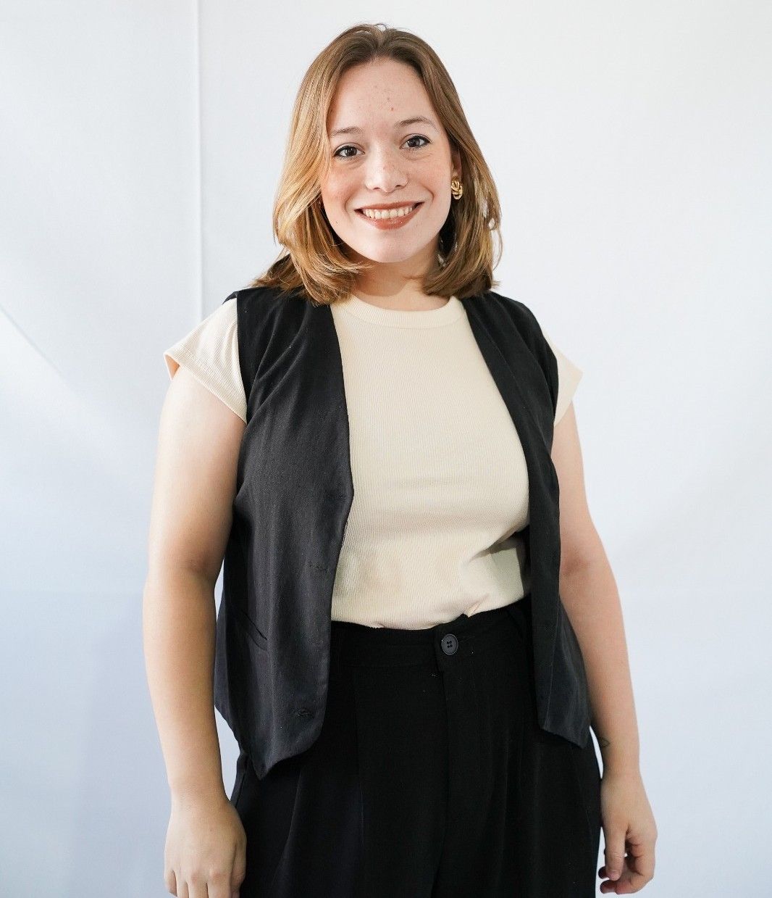
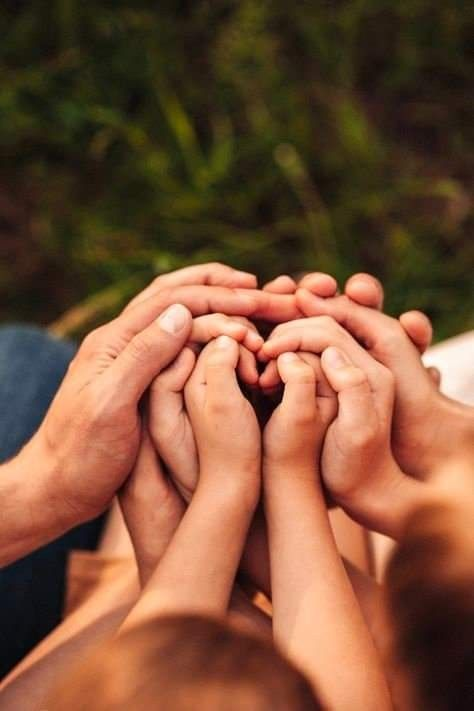

Soy Daniela López
¡Y estoy detrás de este proyecto que nació con un propósito muy especial!: ayudar a las personas a reconectar con sus raíces, a través de la gestión de ciudadanías extranjeras. Sé que detrás de cada trámite hay una historia familiar, un deseo de honrar a los que vinieron antes, de recuperar una parte de la identidad, o de abrir nuevas puertas para el futuro. Por eso, más allá de los papeles y formularios, me interesa escuchar, acompañar y cuidar cada proceso como si fuera propio. Este emprendimiento no es solo mi trabajo, también es mi forma de aportar algo significativo en la vida de quienes confían en mí. Trabajo con responsabilidad, compromiso y, sobre todo, con empatía. Porque sé que no se trata solo de obtener una ciudadanía, sino de reconstruir un pedacito de historia personal. Gracias por estar acá. Ojalá podamos caminar este camino juntos.
